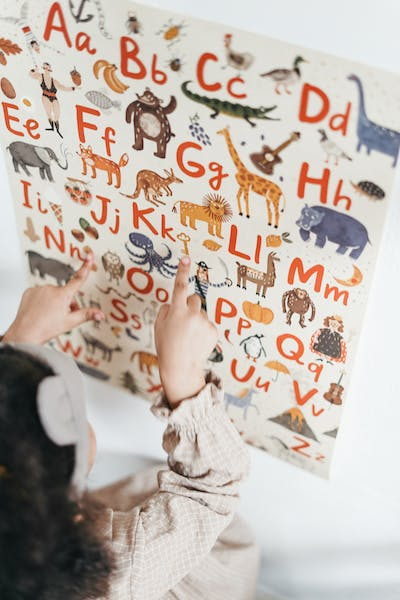

Signs of Dyslexia
Better understand what undiagnosed dylsexia may look like.
While dyslexia has a genetic component and often runs in the family, the learning difference
can look different across different age groups.
Preschool
- Trouble learning common nursery rhymes, such as “Jack and Jill”
- Difficulty learning (and remembering) the names of letters in the alphabet
- Seems unable to recognize letters in his/her own name
- Mispronounces familiar words; persistent “baby talk” *history of speech & language delays
- Not recognizing rhyming patterns like cat, bat, rat
- A family history of reading and/or spelling difficulties (dyslexia often runs in families)

Early Elementary
- Reading errors that show no connection to the sounds of the letters on the page—will say “puppy” instead of the written word “dog” on an illustrated page with a picture of a dog
- Does not understand that words come apart → syllables + individual sounds
- Complains about how hard reading is; “disappears” when it is time to read
- Cannot sound out even simple words like cat, map, nap
- Does not associate letters with sounds, such as the letter b with the “b” sound
- A history of reading problems in parents or siblings
Late Elementary and Beyond
- Very slow in acquiring reading skills.
- Reading is slow and awkward, reading still requires great effort and is done at a slow pace
- Trouble reading unfamiliar words, often making wild guesses because child cannot sound out the word
- Lacks a strategy for reading new words
- Avoids reading out loud
- A childhood history of reading and spelling difficulties
- Rarely reads for pleasure